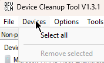

1. Run the
"DeviceCleanup.exe"
as
Admin
Otherwise you won't be able to delete the devices
2. Press
"Ctrl + A"
on your keyboard
3. Press
"Del (or Delete)"
on your keyboard
Or you can
2. Click on
"Devices"
at the top left of the program window

3. Click on
"Select All"
4. Click on
"Devices"
Again
5. Click on
"Remove selected"